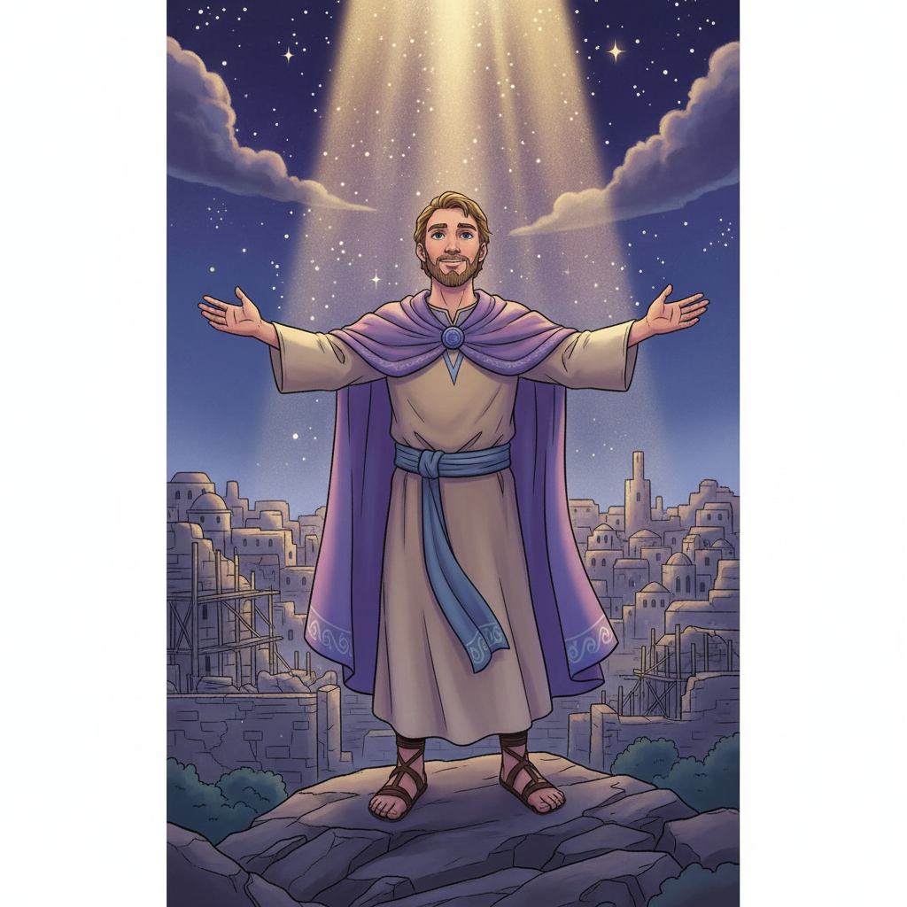
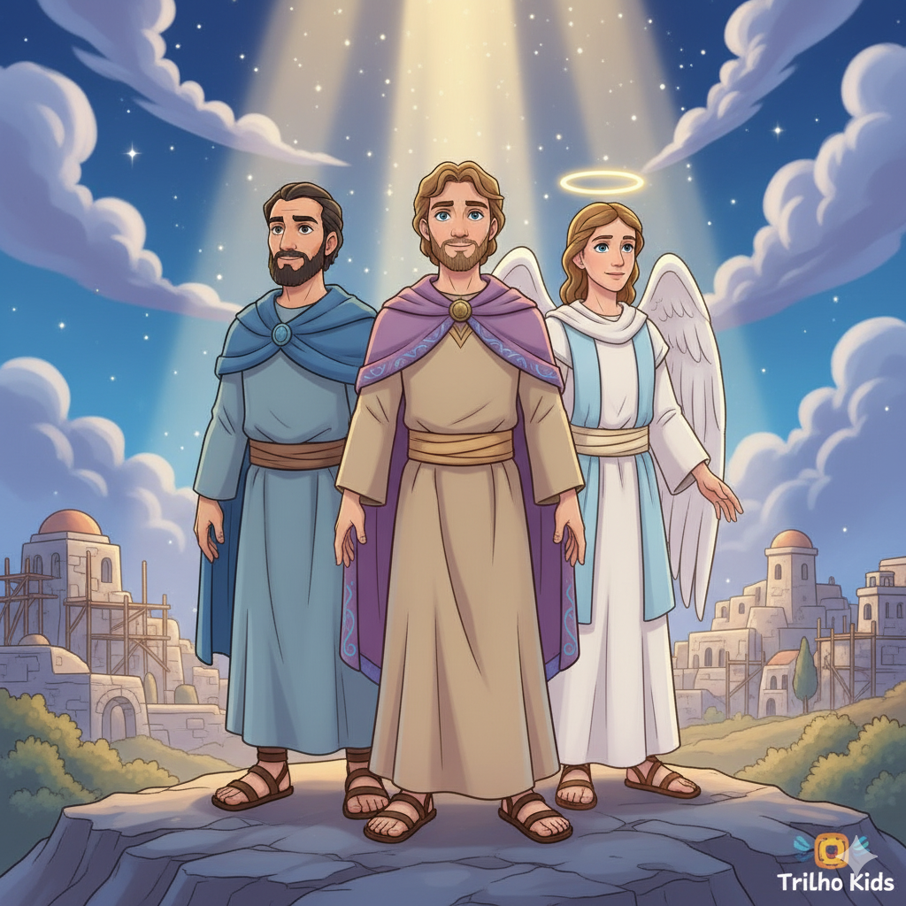
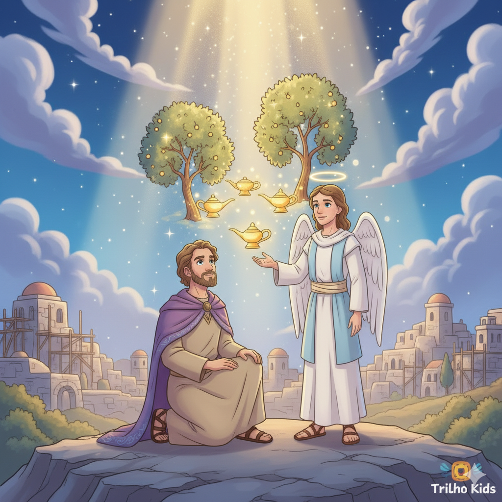
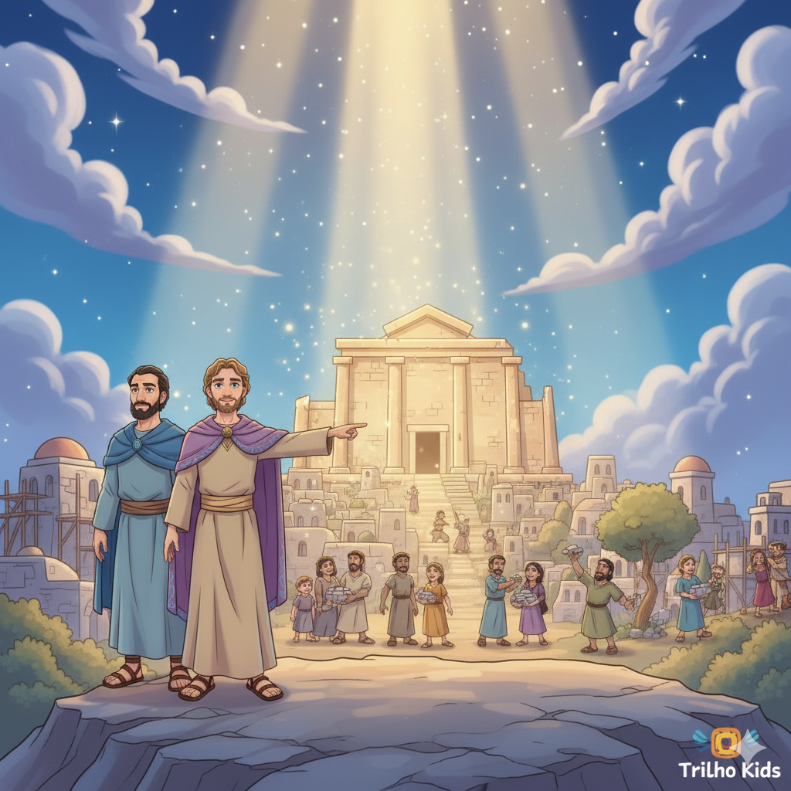
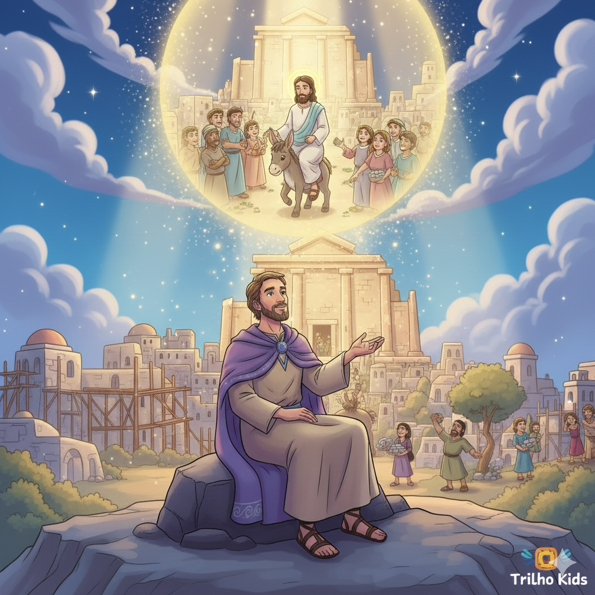
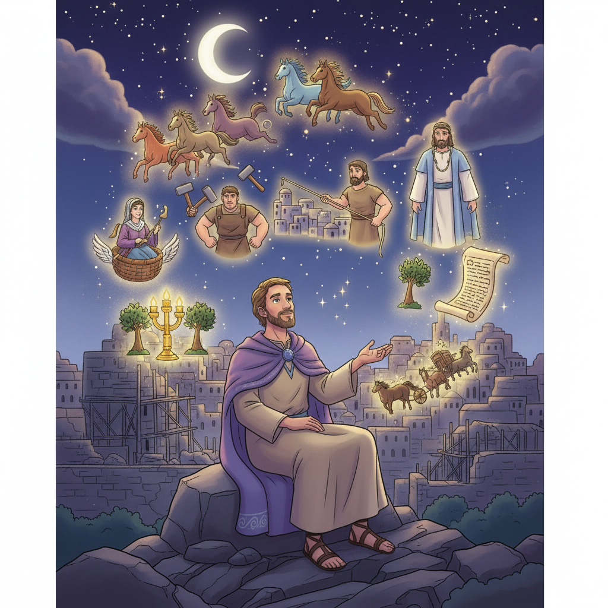

Visões de Esperança e o Messias Prometido — Um Resumo Visual para Crianças
Em uma noite estrelada, Deus revelou,
Oito visões que o profeta contemplou!
Cavalos, candelabros e anjos a voar,
Mostrando que Deus nunca vai nos deixar!
📖 Zacarias 1:7-8
"Alegra-te muito, ó filha de Sião!"
Um Rei chegará montado em jumentinho, então!
Humilde e justo, trazendo salvação,
Jesus cumpriu esta linda profecia com amor no coração!
📖 Zacarias 9:9
Quinhentos anos antes de Jesus morrer na cruz,
Zacarias já anunciava essa luz:
"Olharão para aquele que traspassaram" com dor —
Cumprido quando a lança abriu o lado do Senhor!
📖 Zacarias 12:10 → João 19:37
"Não por exército nem por força, mas pelo Meu Espírito, diz o Senhor dos Exércitos."
📖 Zacarias 4:6
Zorobabel estava reconstruindo o templo com poucos recursos e muitos inimigos. A resposta de Deus: não é no poder humano, mas no Espírito Santo que as grandes obras acontecem!
Profeta e sacerdote ao mesmo tempo, contemporâneo de Ageu. Seu nome significa "O Senhor lembra" — e o livro todo é sobre Deus que não esqueceu Seu povo! Recebeu oito visões proféticas em uma única noite.
🌙 Seu Chamado:
"Voltai para Mim, diz o Senhor dos Exércitos, e Eu voltarei para vós." — Zc 1:3
O governador que estava reconstruindo o templo com poucos recursos e muitos obstáculos. Deus lhe deu uma promessa incrível por meio de Zacarias: o que parecia impossível seria feito pelo Espírito de Deus!
💪 A Promessa para Ele:
"Quem és tu, ó grande monte? Diante de Zorobabel tornar-te-ás planície!" — Zc 4:7
"O anjo que falava comigo" aparece mais de 30 vezes em Zacarias! Ele é o mensageiro de Deus que explica cada visão. É como um guia turístico das revelações divinas — sem ele, Zacarias não entenderia nada do que via!
🗣️ Sua Função:
"O anjo que falava comigo saiu e disse: 'Olha e dize o que vês.'" — Zc 5:5


Em uma única noite, Zacarias tem oito visões: cavalos coloridos patrulhando a terra, chifres e ferreiros, um homem medindo Jerusalém, Josué o sacerdote limpo de pecado, o candelabro e as oliveiras, o rolo voador gigante, a mulher no cesto e quatro carros. Cada visão: uma mensagem de restauração!
O povo pergunta se deve continuar os jejuns. Deus responde: mais importante que o ritual é a justiça! Depois, Deus dá dez promessas gloriosas sobre Jerusalém: "Voltarei a Sião e habitarei no meio de Jerusalém!"
A segunda parte é um explosão de profecias sobre Jesus: o Rei humilde no jumentinho (9:9), as 30 moedas de prata (11:12-13), o Bom Pastor golpeado (13:7), o traspassado (12:10), e o Dia do Senhor final (cap. 14)!
✨ Zacarias é o livro mais citado
nos relatos da Paixão de Jesus no Novo Testamento!
Nenhum outro Profeta Menor fala tanto sobre Jesus! Zacarias prediz com detalhes a entrada triunfal, as 30 moedas de prata, o pastor golpeado, o traspassado pela lança — tudo citado no NT com precisão chocante.
Zacarias 4:6 é um dos versículos mais usados na história da Igreja. Ele ensina que as grandes obras de Deus não dependem de dinheiro ou poder — mas do Espírito Santo. Essa verdade transformou gerações de cristãos!
O capítulo 14 de Zacarias é uma das profecias escatológicas mais ricas do AT: o Dia do Senhor, as nações reunidas, o Monte das Oliveiras dividido e o Senhor reinando como Rei sobre toda a terra!


Junto com Ageu, Zacarias foi enviado para motivar o povo desanimado a concluir a reconstrução. Mas onde Ageu falava de consequências práticas, Zacarias falava de visões celestiais — mostrando o apoio de Deus no reino espiritual!
A segunda parte do livro (cap. 9-14) é quase um "manual do Messias" — descrevendo como Jesus chegaria, como seria traído, como sofreria e como reinaria. É o livro profético mais citado nos evangelhos!
As visões da noite mostram cavalos patrulhando a terra, anjos atuando — Deus está ativo no invisível mesmo quando o visível parece caótico. As coisas não estão fora do controle de Deus!
"O Senhor dos Exércitos estará no lugar deles, e o seu Deus os salvará naquele dia."
📖 Zacarias 9:16
Zacarias 11:12-13 descreve 30 moedas de prata arremessadas no templo e usadas para comprar o "campo do oleiro". Mateus 27:9 cita esse trecho ao narrar que Judas devolveu as 30 moedas e os sacerdotes compraram o "Campo de Sangue" — 500 anos depois!
Zacarias é o livro mais longo dos Profetas Menores — 14 capítulos! Muitos estudiosos o chamam de "o Apocalipse do Antigo Testamento" por causa de suas visões simbólicas e profecias do fim dos tempos que lembram muito o livro de Apocalipse!
Em Zc 9:9, o Messias vem num jumentinho — não num cavalo de guerra. Na cultura do Oriente Médio, o cavalo simbolizava conquista militar; o jumentinho simbolizava paz. Jesus escolheu um jumentinho na entrada triunfal (Mt 21) para mostrar que era o Rei da Paz!

"Eis que o teu rei virá a ti, justo e Salvador, humilde, montado sobre um jumento." Quando Jesus entrou em Jerusalém, Mateus cita explicitamente Zacarias: "Isso aconteceu para se cumprir o que foi dito pelo profeta" (Mt 21:4-5). 500 anos de precisão!
Zacarias foi "pago" com 30 moedas de prata — o preço de um escravo — e as jogou na casa do Senhor para o oleiro. Judas recebeu 30 moedas por Jesus, as jogou no templo, e os sacerdotes compraram o campo do oleiro. Idêntico!
"Olharão para aquele que traspassaram, e o pranteará como se pranteasse o filho unigênito." João 19:37 cita esse versículo ao descrever o soldado que perfurou o lado de Jesus na cruz. Profecia e cumprimento separados por 500 anos!
🔑 A Grande Conexão:
Zacarias é o profeta que mais detalhou a Semana da Paixão de Jesus: a entrada triunfal (9:9), a traição (11:12), o pastor golpeado (13:7) e a lança (12:10). Cada detalhe cumprido com exatidão!
As visões de Zacarias mostram anjos e carros de fogo agindo no invisível. Você acredita que Deus está atuando em coisas que você não pode ver? Como isso muda a forma de encarar os problemas?
Jesus escolheu um jumentinho — o símbolo da paz — em vez de um cavalo de guerra. O que isso diz sobre o tipo de Rei que Jesus é? Como isso é diferente dos reis e heróis que o mundo valoriza?
Zacarias previu detalhes sobre Jesus com 500 anos de antecedência. Como isso fortalece sua fé de que a Bíblia é a Palavra de Deus? Que outros detalhes de sua vida Deus já "planejou" antecipadamente?
Encontre pelo menos 3 das profecias de Zacarias cumpridas nos evangelhos. Use uma Bíblia com referências cruzadas ou peça ajuda a um adulto. Compare cada profecia com o cumprimento — escreva as referências!
Leia uma das 8 visões de Zacarias (cap. 1-6) e desenhe o que imagina que Zacarias viu. Pode ser o candelabro dourado com as oliveiras (cap. 4), o rolo voador (cap. 5) ou os cavalos coloridos (cap. 1)!
Memorize: "Não por exército nem por força, mas pelo Meu Espírito, diz o Senhor dos Exércitos." Quando encontrar algo difícil esta semana, repita esse versículo. Deixe que ele seja o lembrete de que Deus é quem faz as grandes obras!
Trilho Kids | Desenvolvido com ❤️ para crianças © 2025